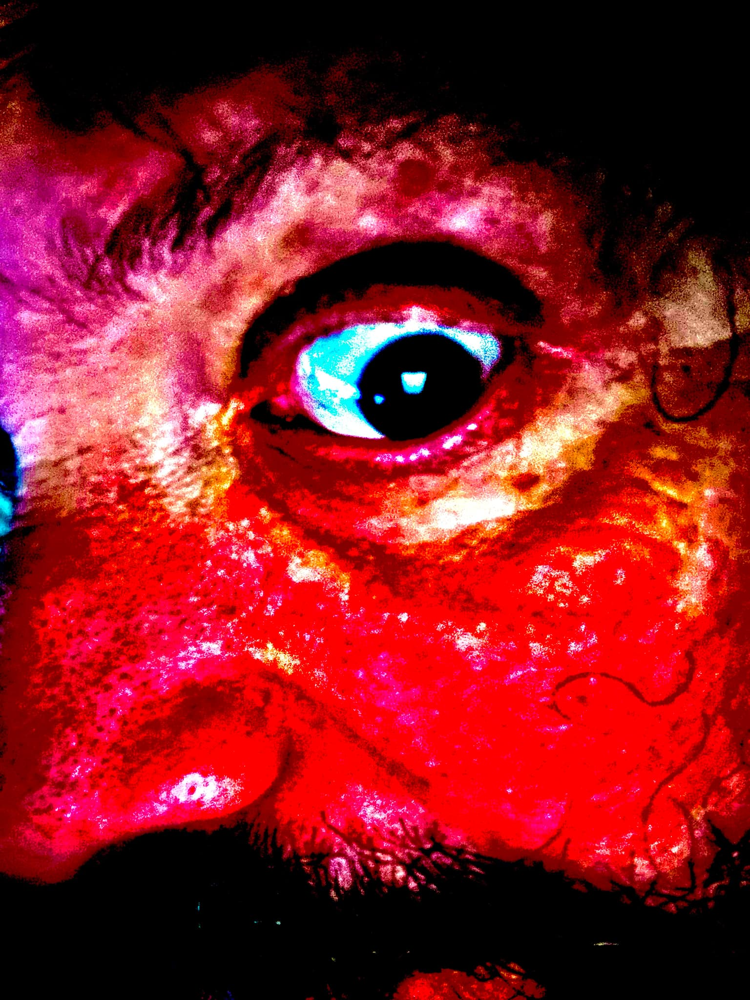

FOREST ALTER

https://seanematzus.bandcamp.com/music
Songs
of summoning to the Outer Gods, the Gods of Leeds, the Great Old Ones,
all manner of wicked fey, wood demon, mountain devil, and swamp witch.
Ritual hymns built of feedback, buried sound-bites, and amplified organic matter.
Brought to you by Sean E. Ramirez (Black Leather Jesus, Priest in Shit, Thin Mountain, et al) and WXXT, the Voice in the Valley.
Ritual hymns built of feedback, buried sound-bites, and amplified organic matter.
Brought to you by Sean E. Ramirez (Black Leather Jesus, Priest in Shit, Thin Mountain, et al) and WXXT, the Voice in the Valley.